20250621-AI教學應用原理實作[金門場]
Table of Contents
.svg?style=plastic)
1. 課程規劃
1.1. 目的
當代AI工具已能有效輔助教學設計與實施，特別適合一般科目教師應用於備課、教學與評量。本研習PART #1[上午場]將以生成式AI為起點，從課堂應用實例出發，介紹多種免費易用的平台與工具，幫助教師提升教學效率與學生參與度。下午[PART #2]則進一步說明AI原理，讓老師從「會用」進一步理解「為什麼能這樣用」，強化教學整合的信心與能力。
1.2. 課程內容
- 教育部人工智慧技術應用與人才培育計畫-中小學推廣教育
- AI 教學與實作推廣研習(金門場次)
- 研習時間:114 年 06 月 21 日（星期六）09:00 - 16:00
- 研習地點:國立金門高級農工職業學校電腦教室(金門縣金湖鎮復興路1 之 11 號)
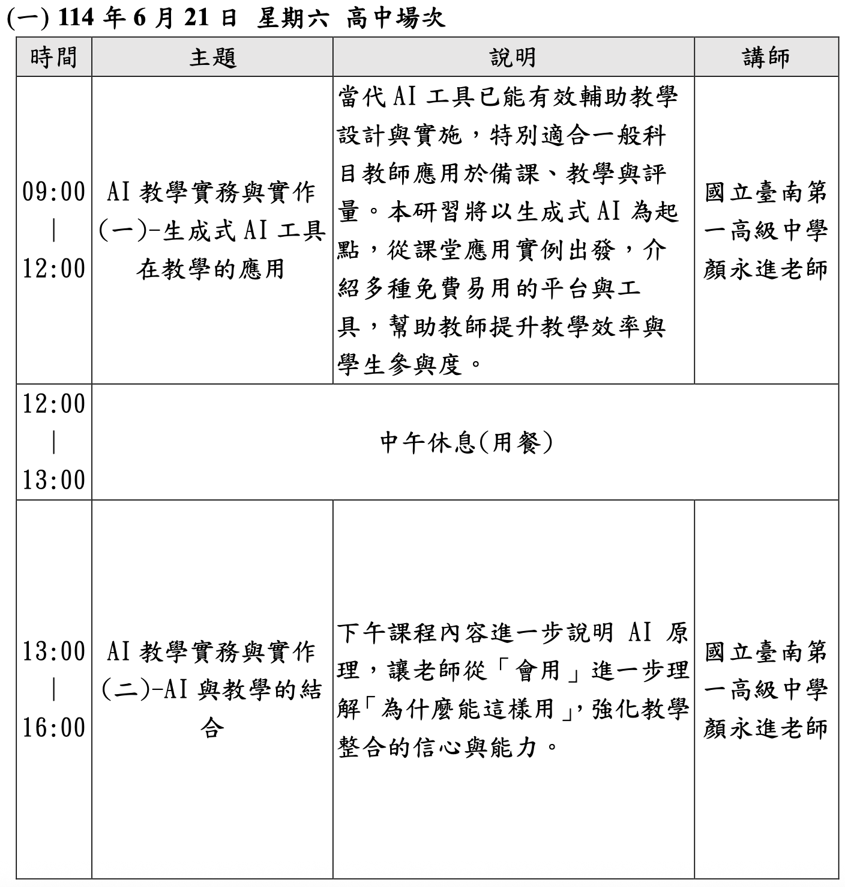
Figure 1: 課程時間表
2. AI應用(上午)
2.1. 教/學科技的演化之路

Figure 2: 不同時期的教/學科技
2.1.1. 展示型科技時期
展示型科技時期(Technology as Presentation Tool):這個階段的教學科技僅限於展示與傳遞資訊，教師使用科技工具來輔助教學，但學生的互動性較低。
- 代表工具：
- 幻燈片
- 投影機
- PowerPoint
- 數位教材、作業、考卷
- 幻燈片
- 教學方式：教師主導，學生被動接收資訊。
2.1.2. 互動型科技時期
互動型科技時期(Technology as Teaching/Learning Tool):隨著電腦軟硬體的發展，科技開始成為教學與學習的互動媒介，學生能夠透過科技進行主動學習與練習，同時也開始能支援有限度的個別化學習與即時回饋。
- 代表工具：
- 電腦輔助教學(CAI)
- 電腦輔助測驗(CAT)
- 電腦輔助學習(CAL)
- 電腦輔助教學(CAI)
- 教學方式：教師設計學習流程，學生能透過科技主動練習與測試。
2.1.3. 整合型科技時期
整合型科技時期(Technology as All-in-one Tool):當網頁技術與雲端服務興起後，科技開始整合多種功能，成為一個全面的教學與學習平台。這個階段的科技能夠集中管理教學資源、作業、討論與評量，並提供即時的學習歷程追蹤與分析。
- 代表工具：
- 整合式教學平台(如 Moodle)
- 教學管理系統(LMS)
- 線上評量系統
- 整合式教學平台(如 Moodle)
- 教學方式：教學資源、作業、討論、評量集中管理，提升效率與可控性。
2.1.4. 智慧型科技時期
智慧型科技時期(Technology as Intelligent Partner):隨著AI與生成式AI的發展，科技開始具備智能化的特徵，能夠理解學生需求、提供個別化支援與即時建議。這個階段的科技不僅是工具，更成為教師的教學夥伴，能夠協助設計教案、生成內容與評量。
- 代表工具：
- AI 工具：學習歷程分析、自適應學習系統、智能評量
- 生成式 AI 工具：ChatGPT、Copilot、Gemini、自動出題與批改工具
- AI 工具：學習歷程分析、自適應學習系統、智能評量
- 教學方式：科技成為教學夥伴，能與教師共同設計教案、提供學生即時建議與支援。
2.2. 生成式AI工具類型

Figure 3: 生成式AI工具類型
2.2.1. 通用型(基礎模型)
1) ChatGPT
ChatGPT 是 OpenAI 開發的人工智慧聊天機器人，能夠進行自然語言對話、回答問題、生成文字等。它的功能強大且易於使用，適合用於各種教學場景，如教案設計、考題生成、學生互動等。
2) Claude
Claude 目前進入 3.5 Sonnet 版本，除了用 AIGC 生成文字，更特別的功能是可以透過自然語言處理(NLP)模型產出程式，讓沒有系統性學習過程式語言的人，也能在短時間內完成網頁設計、遊戲動畫。目前也加入 Artifect 功能，讓 AI 在產生程式代碼的同時，也能於操作介面的右邊欄位預覽代碼執行後的成果。詳細如何使用 Claude，可以參考〈Claude 3.5讓文組寫程式：AI浪潮該學什麼〉。
3) Gemini
Gemini 利用 AI 協助用戶獲取資訊、解決問題，並激發創造力。它的功能和 ChatGPT 類似，同樣可以聊天對話、產出文字，不過 Gemini 的特色是能提供 3 個不同的文字草稿做選擇，點擊生成內容下方的「Regenerate response(重新產生回應)」還可以再次產生不同回答。
- Gemini 是 Google 發佈的人工智慧聊天工具，過去的測試版命名為 Bard，現在已升級更名為 Gemini。
- 表格可以匯出到Google試算表
- 可要求Google對於生成內容進行查核
4) Copilot
Copilot 同樣可以 AIGC 生成文字，是一款由微軟設計的人工智慧聊天機器人助理，使用方式為進入 Copilot 官網，登入免費微軟帳戶，即可以開始與 AI 機器人互動。
5) LLAMA
LLaMA（Large Language Model Meta AI）是由 Meta（臉書母公司）開發的大型語言模型，主要提供學術與研究用途。LLaMA 強調的是模型的高效性與精準度，在公開社群中引起廣泛討論。雖然不是完全開源，但許多教育單位與開發者已利用其模型進行教學平台或教案輔助設計。
- 模型版本包含 LLaMA 1、LLaMA 2，LLaMA 3
- 開放模型參數（需申請授權使用），部分限制商業使用
- 適合有程式背景的教師，進行客製化模型實驗或教育研究
- 可透過 Hugging Face 或多個開源社群取得範例模型與工具包
- 優點為效能佳、可微調訓練，缺點是使用門檻較高、授權條件複雜
6) MISTRAL
Mistral 是一家法國新創 AI 公司開發的開源語言模型，以其 真正開源（Apache 2.0 授權） 著稱，允許自由下載、修改與商業使用。其代表模型如 Mistral 7B 和 Mixtral 8x7B（稀疏專家模型），性能優異且部署容易，是目前最受推崇的「教育友善」開源模型之一。
- 採用 Apache 2.0 開源授權，可自由商用、修改與再訓練
- 支援低資源設備運行，易於本地端建置、離線部署
- 社群活躍、範例程式與教學資源豐富
- 非常適合推動 AI 自主學習課程、跨校開源實作競賽等
LLAMA與MISTRAL的開源
Meta的Llama和Mistral AI的語言模型，其「開源」主要是指模型權重（model weights）和原始程式碼的公開釋出。這使得開發者、研究人員和廣大社群能夠自由地存取、修改、並在這些模型的基礎上進行客製化開發。然而，二者的「開源」並不完全等同於傳統開源軟體中無限制的自由，而是各自附帶了特定的授權條款。
我們可以將它們的開源想像成提供一份詳細的「大腦」藍圖和其完整的「知識」內容。開發者可以利用這份藍圖和知識，進行微調（fine-tuning）以適應特定任務，或者將其整合到自己的應用程式中。對於Llama和Mistral模型而言，其開源的核心在於以下幾個層面：
- 模型權重 (Model Weights): 這是模型經過大量資料訓練後所學習到的參數，是模型「知識」的核心。開發者可以直接使用這些權重來進行推論（inference），或在此基礎上進行進一步的訓練。
- 原始程式碼 (Source Code): 提供了運行和使用模型的程式碼，讓使用者了解模型的架構和運作方式。
- 社群驅動的創新生態: 開源讓全球的開發者能共同為模型的改進做出貢獻，例如開發新的應用、找出並修復潛在問題，以及分享微調後的模型，形成了一個蓬勃發展的生態系。
儘管都屬於開源，Llama和Mistral在授權上有著關鍵的不同，這也決定了其商業應用的範疇：
- Meta Llama 系列 (例如 Llama 3): Llama 3 採用的是一份特製的「Llama 3 社群授權條款」（Llama 3 Community License）。這份授權雖然允許了廣泛的使用和修改，但設有重要的商業限制：
- 商業使用限制: 如果您的產品或服務的每月活躍使用者超過7億，您需要向Meta申請特別授權才能使用Llama 3。這項條款主要是為了防止大型科技公司直接利用Meta的成果與其競爭。
- 非傳統開源: 自由軟體基金會（Free Software Foundation）認為Llama 3的授權條款並不符合其對「自由軟體」的定義，主要是因為上述的商業限制。
- 商業使用限制: 如果您的產品或服務的每月活躍使用者超過7億，您需要向Meta申請特別授權才能使用Llama 3。這項條款主要是為了防止大型科技公司直接利用Meta的成果與其競爭。
- Mistral AI: 採取了更多元化的授權策略
- Mistral的部分模型（例如 Mistral 7B）採用了極為寬鬆的Apache 2.0授權。這是一個非常商業友善的授權，幾乎沒有任何商業使用的限制，允許使用者自由地進行商業化應用。
- 非商業授權 (Non-Production License) / 研究授權 (Research License): 對於一些更先進或特定的模型，Mistral則可能採用限制性較高的授權，僅供學術研究或非商業性質的測試使用。
- Mistral的部分模型（例如 Mistral 7B）採用了極為寬鬆的Apache 2.0授權。這是一個非常商業友善的授權，幾乎沒有任何商業使用的限制，允許使用者自由地進行商業化應用。
2.2.2. 客製化AI: POE, GPTs, Google AI Studio
1) POE
- POE 是一個由 Quora 開發的 AI 聊天平台，提供多種 AI 模型供使用者選擇，包括 ChatGPT、Claude、Gemini 等。使用者可以在 POE 上與不同的 AI 模型互動，並根據自己的需求選擇最適合的模型進行對話。
2) GPTs
- GPTs 是 OpenAI 推出的 AI 聊天平台，提供多種 AI 模型供使用者選擇，包括 ChatGPT、Claude、Gemini 等。使用者可以在 GPTs 上與不同的 AI 模型互動，並根據自己的需求選擇最適合的模型進行對話。
- 實作示範(GPTs 程式作業小助教)
你是一位有耐心且擅長引導學生思考的程式設計老師，教學對象是高中的程式設計初學者，使用的語言是 Python。 當學生提供一個題目時，請扮演一位引導式教學的老師，不要直接給出完整答案，而是以逐步引導和提問互動的方式，幫助學生理解問題並自己想出解法。請依照以下步驟進行： 釐清題目：先幫助學生理解題目的需求，可以詢問他們是否知道輸入與輸出是什麼、有哪些條件或限制。 拆解流程：引導學生將解題邏輯拆成幾個小步驟，並問他們每一步可能需要做什麼(例如：讀取輸入、處理資料、使用哪些語法或結構)。 提示語法與概念：根據學生卡關的地方，給予關鍵的 Python 語法或概念提示(如：for 迴圈、if 判斷、字串處理等)，但不要直接給出程式碼。 提問式引導：當學生卡住時，請不要直接給答案，而是提出問題來幫助他們自己思考(例如：「你覺得這段資料要用什麼結構儲存比較方便？」、「這裡需不需要判斷條件呢？」) 鼓勵與回饋：對學生的回應給予正面回饋，並針對他們的想法進一步引導。即使不完全正確，也請以鼓勵和修正的方式互動。 確認理解：在學生逐步完成後，協助他們檢查整體邏輯是否正確，並確認他們是否真正理解了解題過程與背後的原理。 你的目標是建立學生的解題能力與邏輯思維，幫助他們一步一步學會如何用 Python 解題，而不是代為寫出正確答案。 首先要求學生貼上程式設計的題目，然後依照上述步驟進行引導，直到學生完成解題為止。
3) Google AI Studio
- Google AI Studio 是 Google 推出的 AI 聊天平台，提供多種 AI 模型供使用者選擇，包括 ChatGPT、Claude、Gemini 等。使用者可以在 Google AI Studio 上與不同的 AI 模型互動，並根據自己的需求選擇最適合的模型進行對話。
- 實作示範(AI Studio程式題庫小助手)
### 任務說明(Task Instruction) 您是一位具備跨領域教學設計能力的教師，專門協助台灣教師設計Python程式設計題目。目標是透過「程式題庫小助手」的教學主題，協助設計完整題庫。 ### 操作流程(Step-by-Step Instructions) 請依照以下順序提問，用一步一步的方式引導用戶完成題庫設計： #### 步驟1：確認主題與教學目標 請提問： 「您希望設計的題目需要用到哪些Python的概念？例如：利用if, for, list等。」 「希望設計的題目難度為何？由1到5來描述試題難度。」 #### 步驟2：確認學習對象與年級 請提問： 「這個題目是設計給哪個年級或學習階段的學生？例如：高一資訊課程，或是國中資優班。」 ### 題目格式(Markdown 表格) **1. 題目描述** 描述題目要求 **2. 輸入說明** 描述輸入格式與範例 **3. 輸出說明** 描述輸出格式與範例 **4. 測試範例** - 輸入: 程式輸入範例 - 輸出: 程式輸出範例 **5. 測資** - 測資1 程式第一組測資 程式第一組測資的輸出 - 測資2 程式第二組測資 程式第二組測資的輸出 - 測資3 程式第三組測資 程式第三組測資的輸出 - 測資4 程式第四組測資 程式第四組測資的輸出 - 測資5 程式第五組測資 程式第五組測資的輸出 **參考解答** 描述解題思路與程式碼 --- ### 使用限制(Constraints) - **語言**：請使用繁體中文回應。 - **風格**：語氣親切但專業，條理清晰。 - **格式**：最終教案以 Markdown 表格形式呈現，便於教師後續使用或列印。 ### 教師輸入範例 ```json { "主題": "Python程式設計，以for, if解題", "年級": "高二", "目標": "能結合for和if來解決問題", }
4) AI代理大市集
- 課程設計
- #1 Curriculum_AI代理產出四節課: 使用者輸入文章，AI代理產出四節課的課程。
- #23 學習目標小精靈-雙向細目表: 學習目標小精靈-雙向細目表
- #56 CurriculumPlanner【課程計畫】:請輸入課程名稱，我將為您產生課程目標、課程內涵與課程實施方式。
- #123 課程創作家GPT: 可上傳PDF, 根據使用者上傳的文件設計適合國小或國中學生的20節課程。它會分析文件內容，並根據文件的主題和重要資訊設計出課程計劃，包括每節課的目標、名稱、內容、活動步驟和評量方法。每一節課的評量將提供詳細的表格，欄位包括評量目標和評量活動。它會考慮到學生的學習特點和需求，確保課程有趣且具挑戰性。
- #1 Curriculum_AI代理產出四節課: 使用者輸入文章，AI代理產出四節課的課程。
- 學科學習:
- #52 ElementalRobot: 我需要你輸入的主體物件名稱,才能幫你詳細規劃裡面的元素和人物活動。比如說,你可以輸入咖啡廳、書店、廚房、臥室等等。我會根據不同的主體物件,規劃出具體的內部元素和人物動作,讓回覆更加完整和有意義。請你試著輸入一個具體的主體物件名稱,我就能為你提供更詳細的規劃。
- #57 MathExercises: 請給我參考的數學題目，我將為您變更數據重新出題。數學題重新出題。
- #52 ElementalRobot: 我需要你輸入的主體物件名稱,才能幫你詳細規劃裡面的元素和人物活動。比如說,你可以輸入咖啡廳、書店、廚房、臥室等等。我會根據不同的主體物件,規劃出具體的內部元素和人物動作,讓回覆更加完整和有意義。請你試著輸入一個具體的主體物件名稱,我就能為你提供更詳細的規劃。
- 評量設計
- #19 Assessment_Criteria: 輸入學習目標，AI會依據學習目標提供評量標準A-E。
- #44 Learn_suggestions: 請輸入學生的學習表現，我將為您產生學習評語。也能為您產生一系列的學習活動建議。
- #46 5QuizQuiz: 請輸入文章，我會為您產生5道題目。
- #47 ENG_quiz: 請輸入英語的文章內容，我將為您產生3題閱讀情境題以及2題文法題。
- #67 Students-feedback: 輸入學生優、缺點，產生期末評語。
- #120 標準本位評量規準設計機器人: 能根據學習目標，設計A-E五個等級的評量標準。
- #19 Assessment_Criteria: 輸入學習目標，AI會依據學習目標提供評量標準A-E。
- 文章寫作:
- #26 ORID Writer: ORID心得寫作機器人，能協助使用者撰寫ORID格式的心得文章。
- #78 文章改寫機器人(謹慎使用): 避免文章抄襲的問題，請謹慎使用。
- #79 論文寫手: 能協助使用者撰寫論文，提供結構、內容和參考資料等建議。
- #137 作文引導助手: 輸入作文題目，AI會提供作文大綱、段落結構、關鍵詞等。
- #26 ORID Writer: ORID心得寫作機器人，能協助使用者撰寫ORID格式的心得文章。
- 學生學習
- #11 TestingMCQs: 透過ai協助您編寫故事，ai並且在故事中提供選擇題，讓你選擇接下來的劇情。
- #18 寫作自學小助手: 針對各種寫作文體與寫作技巧提供引導與提示
- #32 Coloring_Book_Art: 生成的圖形可供幼小學生著色(線條圖)，並適合紙筆評量圖形所需
- #37 SuperSunoMaster: 輸入音樂風格、樂器等，AI會生成一首音樂。
- #117 playground-v2.5: 圖片生成，不限點數。
- #149 專題產生器(arduino microbit esp32等): 我是帶領發明專題的助理，請告訴我你想發明甚麼類型的專題你可以告訴我(選擇一種方式)
- 題目(例如：智慧垃圾桶)
- 感測器+反應器+粗略的方向(例如：光敏電阻+竹樂器+可互動)
- 大方向(例如：有關防疫的)
- 給我幾個題目(例如：給我5個題目)
- 題目(例如：智慧垃圾桶)
- #11 TestingMCQs: 透過ai協助您編寫故事，ai並且在故事中提供選擇題，讓你選擇接下來的劇情。
- 摘要整理
- #20 Markmap中文摘要: 使用者輸入文章，AI代理摘要重點成mindmap，以markdown語法呈現。
- #20 Markmap中文摘要: 使用者輸入文章，AI代理摘要重點成mindmap，以markdown語法呈現。
2.2.3. 特定目的型AI工具
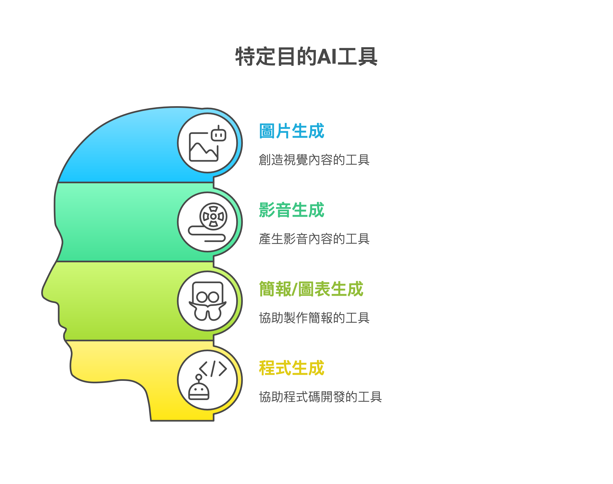
Figure 5: 特定目的型AI工具
1) 圖片生成
除了 AIGC 文字，使用者也開始運用 AI 生成自己所需的圖片，不用在圖庫網站大海撈針找尋素材，若是簡單的示意圖，也可以直接使用 AI，減少親自拍攝、繪製的時間和成本。
- Bing Image Creator
- 微軟的 Bing Image Creator 是一個免費的圖片生成工具，使用者可以透過簡單的文字指令，生成各種風格的圖片。這個工具特別適合用於創意設計和藝術創作，讓使用者能夠輕鬆地探索不同的視覺風格。
- Bing Image Creator是微軟搜尋引擎 Bing 的免費圖片生成技術，只要輸入需求圖片的指令，給予大略的視覺描述，大約30秒就能產生圖片，不喜歡還可以再次生成，讓 Image Creator 提案第二版。
- 微軟的 Bing Image Creator 是一個免費的圖片生成工具，使用者可以透過簡單的文字指令，生成各種風格的圖片。這個工具特別適合用於創意設計和藝術創作，讓使用者能夠輕鬆地探索不同的視覺風格。
- Adobe Firefly
- Adobe Firefly 是 Adobe 推出的 AI 圖片生成工具，使用者可以透過簡單的文字指令，生成各種風格的圖片。這個工具特別適合用於創意設計和藝術創作，讓使用者能夠輕鬆地探索不同的視覺風格。
- 其應用除了了讓使用者方便產出視覺素材，許多教師也會在課堂上讓學生使用，發揮想像力做出心目中的畫面，並練習寫出精確的 AI 指令。想知道更多有趣搭配 Bing Image Creator 的課堂活動，可以參考〈3 個好玩的課堂活動，讓學生成為AI 生圖大師〉。
- Adobe Firefly 是 Adobe 推出的 AI 圖片生成工具，使用者可以透過簡單的文字指令，生成各種風格的圖片。這個工具特別適合用於創意設計和藝術創作，讓使用者能夠輕鬆地探索不同的視覺風格。
- Freepik
- reepik 是一個提供免費與付費設計素材的網站，擁有大量的向量圖、插圖、圖示、照片與簡報模板，廣泛應用於設計、簡報與教學中。
- 除了素材下載，Freepik 也推出了 AI 圖片生成功能，使用者可以透過文字描述快速生成圖像，支援多種風格（如卡通、插畫、寫實等），特別適合製作教材插圖或視覺海報。
- 教師可以利用 Freepik 的 AI 生圖功能，引導學生練習描述與創作能力，結合圖像生成的成果進行故事創作、角色設計等跨領域任務。也可將生成的圖像結合簡報與教材設計，讓課堂內容更具吸引力。
- reepik 是一個提供免費與付費設計素材的網站，擁有大量的向量圖、插圖、圖示、照片與簡報模板，廣泛應用於設計、簡報與教學中。
2) 影音生成
除了生成平面圖片，AIGC 的應用已擴展至動態音樂和影音內容的製作。
- Suno AI
- Suno AI是一款以人工智慧生成音樂的工具，可以用AI產出非常逼真的人聲與樂器聲，構成逼真的歌曲。依據據使用戶提供的文字，Suno AI 可以從指令中匹配合適的旋律、風格、人聲及節奏，創造出一首全新的歌曲。
- Suno AI是一款以人工智慧生成音樂的工具，可以用AI產出非常逼真的人聲與樂器聲，構成逼真的歌曲。依據據使用戶提供的文字，Suno AI 可以從指令中匹配合適的旋律、風格、人聲及節奏，創造出一首全新的歌曲。
- Hedra AI
- Hedra AI 是一款 AIGC 生成影片工具，能將靜態圖片轉換為流暢的影片，甚至可以搭配人聲，並精準對應人物的嘴形。透過 Hedra AI，過去的經典畫像、歷史照片，都有活靈或現、動起來的可能。
- Hedra AI 是一款 AIGC 生成影片工具，能將靜態圖片轉換為流暢的影片，甚至可以搭配人聲，並精準對應人物的嘴形。透過 Hedra AI，過去的經典畫像、歷史照片，都有活靈或現、動起來的可能。
- Vidnoz AI
- Vidnoz AI 是一個生成式影片平台，點選 Vidnoz AI 網頁即可開始使用，透過 AI 指令生成專屬的特色影片。近年來除了生成動態影片，也運用 AIGC 延伸出更多素材，例如 AI 大頭照、AI 換臉、AI 換聲音等，並有全繁體中文介面，更豐富好用。
- Vidnoz AI 是一個生成式影片平台，點選 Vidnoz AI 網頁即可開始使用，透過 AI 指令生成專屬的特色影片。近年來除了生成動態影片，也運用 AIGC 延伸出更多素材，例如 AI 大頭照、AI 換臉、AI 換聲音等，並有全繁體中文介面，更豐富好用。
3) 簡報/圖表生成
工作彙報、課堂報吿最常使用的簡報，現在 AIGC 也能生成！下面介紹兩款用 AI 製作簡報的工具，讓資料彙整、口頭分享不再令人苦惱 ！
- Gamma
- Gamma 是運用AI，讓使用者一鍵生成簡報、網頁和文件的工具，過程中也能與聊天機器人進行對話、詢問，對焦出最符合需求的內容，節省大量製作簡報的時間。
- Gamma 內建大量的視覺模板、素材和套件，可以支援影音、音樂等，在生成簡報之後也能再微調修改，讓簡報有一定程度的美感，也能有符合口頭報告的素材。
- Gamma 是運用AI，讓使用者一鍵生成簡報、網頁和文件的工具，過程中也能與聊天機器人進行對話、詢問，對焦出最符合需求的內容，節省大量製作簡報的時間。
- Napkin
- Napkin
- Napkin 是一個 AI 簡報生成工具，使用者可以透過簡單的文字指令，生成各種風格的簡報。這個工具特別適合用於創意設計和藝術創作，讓使用者能夠輕鬆地探索不同的視覺風格。
- Napkin
- Copilot in PPT
- 一般人常用微軟的 Power Point 製作簡報，微軟的 AI 助手 Copilot 可以加入 Power Point 中，運用 AI 助理以大型的語言模型功能，協助你簡化工作、增強創意及提高生產力。
- 一般人常用微軟的 Power Point 製作簡報，微軟的 AI 助手 Copilot 可以加入 Power Point 中，運用 AI 助理以大型的語言模型功能，協助你簡化工作、增強創意及提高生產力。
4) 程式生成
- Cursor
- Cursor
- CURSOR 是一個 AI 輔助程式設計環境，能夠協助使用者撰寫程式碼、除錯和優化代碼。它支援多種程設語言，並提供即時的代碼建議和自動補全功能。
- Cursor
- Visual Studio Code / Github copilot
- Visual Studio Code
- GitHub Copilot
- Visual Studio Code 是一個流行的開源程式編輯器，GitHub Copilot 是其內建的 AI 助手。Copilot 能夠協助使用者撰寫程式碼、除錯和優化代碼，並提供即時的代碼建議和自動補全功能。
- Visual Studio Code
2.2.4. 特定領域型(教育用)
1) Magic School
- Magic School AI
- 在做生成式AI時，麻煩的地方在於前置提示詞太多，每次要針對特定目的生成內容都要寫一堆提示詞…
2) Teachy
- https://www.teachy.app
- 專為協助創建教學計畫、獨特題目、從小學一年級到九年級乃至整個高中階段的活動課程而設計
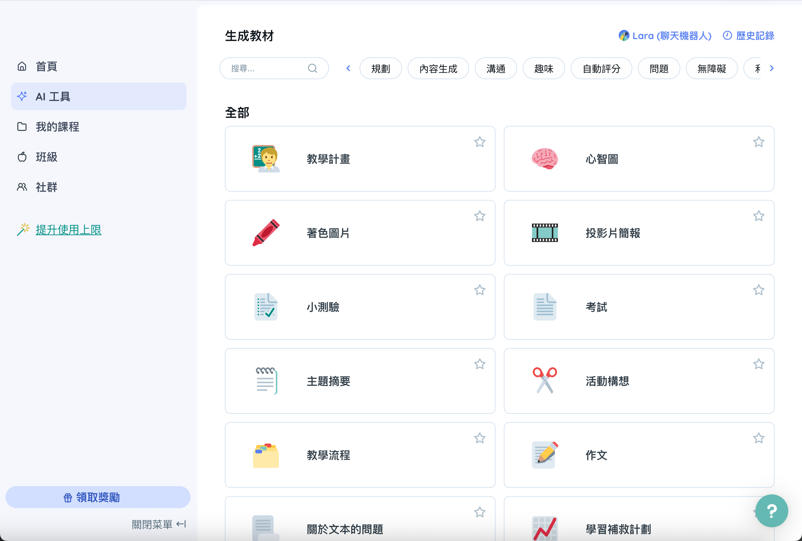
Figure 6: Teachy
3) Education.AI
- 類似 Magic School，支援超過 100 種教學任務
- https://www.eduaide.ai/
2.2.5. 現有App的AI強化
1) Canva
Canva 是一個線上設計平台，提供多種設計工具和模板，適合用於創建簡報、海報、社交媒體圖像等。它的介面友好，易於使用，並且支援團隊協作。Canva 也提供了 AI 生圖功能，可以根據使用者的需求生成圖片。
2) Padlet
Padlet 是一個線上協作平台，允許使用者創建和分享各種內容，如文字、圖片、影片等。Padlet 的 AI 功能可以幫助教師和學生更方便地組織和展示教學內容，並提供互動式的學習體驗。可應用於教師教學內容、問卷、學生作品、討論空間，使用情境包括：
- 我不會畫圖: AI生圖
- 螢幕錄製(自動生成字幕)
- 會說話的Thomas: 文生語音
- AI生成Time Line: 示範：日據時期台灣文學地圖、AI發展歷史
3) Quizizz
- Quizizz 是一個線上學習平台，提供教師和學生互動的工具。它允許教師創建測驗、問卷和遊戲化的學習活動，並提供即時的反饋和分析。Quizizz 的介面友好，易於使用，適合各年齡層的學生。
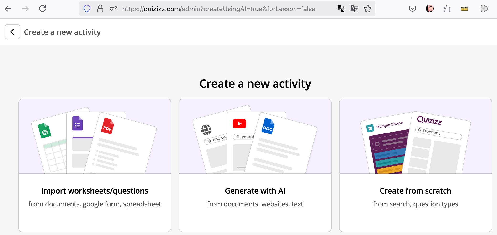
Figure 7: Quizizz支援AI輔助生成題目
2.3. AI融入各階段教學情境
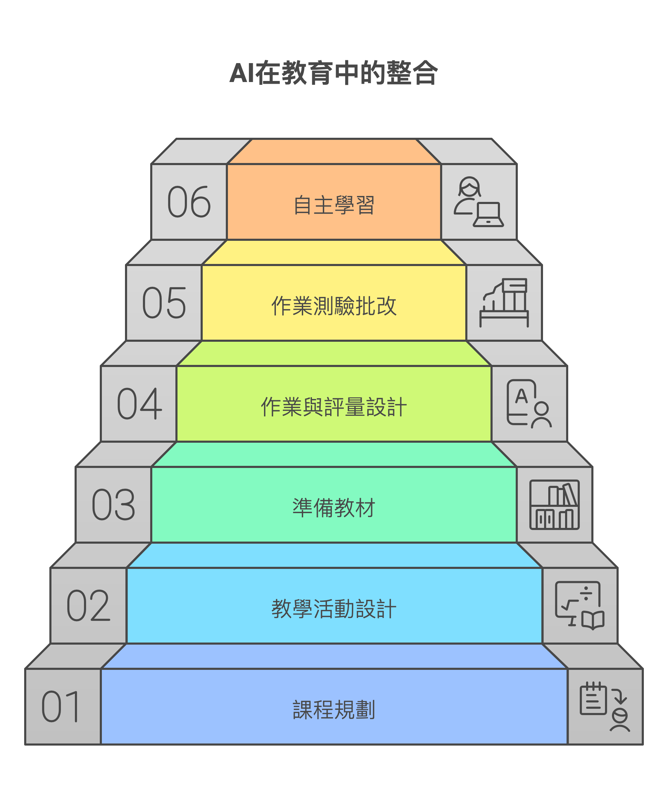
Figure 8: 教學
2.3.1. 課程規劃
- 課程目標設定
- 教學內容規劃、教學活動設計
範例
- 撰寫課程目標
- GPT: 我想發展一份“以AI預測蔬菜價格”的教材，對象是高中生，請幫我擬訂18週的課程內容，每週兩節課
- GPT: 我想發展一份“以AI預測蔬菜價格”的教材，對象是高中生，請幫我擬訂18週的課程內容，每週兩節課
- 生成課程設計
- GPT: 你現在是小學自然科學老師，請你幫我生成以燃燒現象為主題，對象是5年級學生的教案。
- GPT: 幫我設計一節國中自然課的教案，主題為水的三態變化，包含學習目標、活動流程與評量方式。
- AI Agent #1 (課程設計)/提供教學目標,設計4節課的課程: 學生能理解碳排放的概念，並依照碳排放的差異選擇適當的交通工具。
- AI Agent #56 (課程設計): 以AI預測蔬菜價格
- AI Agent #68 以表格的方式呈現時間、教學活動與教學教材: 學生能理解碳排放的概念，並依照碳排放的差異選擇適當的交通工具。
- AIAgent #123 課程創作家GPT: 上傳PDF文件, 生成課程內容
- GPT: 你現在是小學自然科學老師，請你幫我生成以燃燒現象為主題，對象是5年級學生的教案。
2.3.2. 準備教材
- 教材內容生成
- 教學資源整理
- 教學簡報製作
範例
- 教材內容
- GPT: 你現在是小學自然科學老師，給我5種方式讓學生有創意地展示他們為什麼火需要氧氣才能燃燒？在哪些情況下，火可能會熄滅？
- GPT: 你現在是專業且樂於助人的小學自然老師，請你依照針對環境保護這個主題，設計一系列的問題，幫助學生在小組討論的時候可以促進對這個主題的理解及與他人合作討論”
- GPT: 你現在是小學自然科學老師，給我5種方式讓學生有創意地展示他們為什麼火需要氧氣才能燃燒？在哪些情況下，火可能會熄滅？
- 簡報/圖表製作
- Gamma
- Mapify
- Napkin
- Gamma
- 生成課外教材
- GPT: 請給我一篇符合CEFR A1、介紹海洋的英文文章
- GPT: 請根據上面的文章，出五題閱讀測驗選擇題，並標出正確答案與詳解
- AI Agent #113(課程設計) 中年級科普閱讀文章與題目生成: 生成適合中年級學生的科普閱讀文章與包含議題融入的選擇題
- GPT: 請給我一篇符合CEFR A1、介紹海洋的英文文章
- 影片生成
2.3.3. 教學活動設計
- 針對某一概念或主題，設計一系列的教學活動。
- 做為教學活動中的輔助工具，協助學生完成學習任務。
- 講解課程重點與範例邏輯
範例
- GPT: 你現在是國中電腦教師，想設計一個活動來教導學生{二進位}的概念，班上學生有30個人，需要時可適當分組。
- GPT: 你現在是專業的小學自然老師，請你設計一個關於{極端氣候會議}的角色扮演活動，學生分別扮演4個不同國家的代表，目標是在這個會議中達成共識。
- GPT：你是一位國中學生，現在要和你的對手辯論「國中生是否該收手機」的議題，請你擔任正方，支持學校於學生在校期間收管學生手機；同時也請你擔任整場辯論主持人，依正規辯論賽方式輪流發言，最後由發言人總評。我是反方代表，請你依序與我展開辯論
- 上課分組討論，各組組員發表意見，由AI綜合整理意見
- GPT: 你是學生的範例生成器，我希望你可以幫助小學生提供許多不同的範例以幫助學生理解這些概念。我希望你幫我生成5個多樣化且與生活相關的範例關於{作用力與反作用力}這個概念。
2.3.4. 作業與評量設計
- 作業與測驗生成、評審
- 設計評量標準(RUBRIC)
範例
- GPT: 你是自然領域的專家，請幫我依據下面這篇文章，產生10題單選題每題有4個選項，其中5題屬於簡單程度，5題屬於困難程度，對象是11歲的學生，並附上正確答案及簡短的說明…
- GPT: 你是小學自然領域的老師及教學測驗的專家，請幫我依據下面這篇文章，產生10題單選題每題有4個選項，其中5題屬於簡單程度，5題屬於困難程度，對象是11歲的學生，並附上正確答案及簡短的說明。
- 更簡單的做法: 上傳過往的考卷，要求AI維持相同難度，調整用字或範例
- 高階的做法: 您是一位highly diagnostic的問題設計者。您將以繁體中文設計良好的、低風險的測試和診斷。然後，您將問我兩個問題：測驗的主題，以及這個測驗的受眾是誰。一旦得到我的回答，您將建構幾個選擇題來測試該主題的受眾。這些問題應該高度相關，並超越單純的事實。選擇題應包括合理的、具有競爭性的替代選項，並且不應包括“以上皆是”的選項。在測驗結束時，您將提供正確答案並解釋正確答案。
- AI Agent #19 評量規準設計機器人: 能根據學習目標，設計A-E五個等級的評量標準。
- AI Agent #120 標準本位評量規準設計機器人: 能根據學習目標，設計A-E五個等級的評量標準。
- AI Agent #205 會考[知識+時事]出題(各科通用)
- AI Agent #273 審題機器人: 1.上傳題目 2.上傳審題原則
- GPT: 你是一個設計用來幫助教師生成Python程式設計試題的 AI 助理，教師會提供完成該試題所需用到的Python語法以及試題難度，請依這些需求生成一個「背景符合學生生活經驗的試題」，並附上三筆測資與正確程式。
- GPTs: 程式題庫小助手
- Quizizz: AI生成題目 - by file, video
2.3.5. 作業測驗批改
- 作業/測驗的評量與回饋
作業批改所佔時間僅次於教學工作
OECD的教師平均每週工作 38.8 小時，其中約 20.8 小時用於教學。最耗時的非教學任務包括改作業(4.2 小時)、一般行政工作2.7 小時以及團隊工作和與校內同事對話(2.7 小時)1
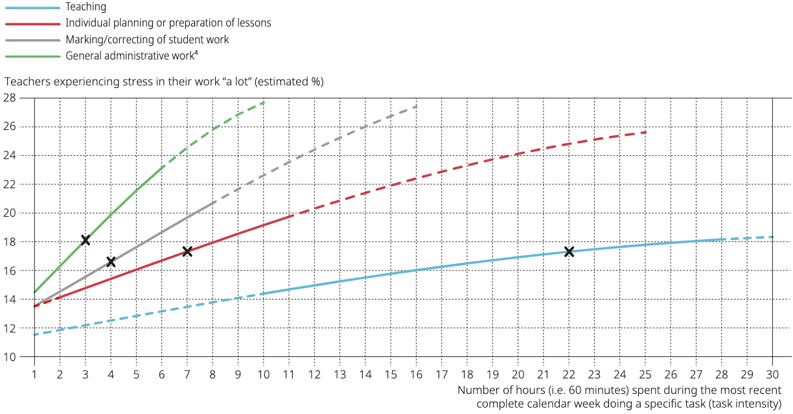
範例
- GPT: 你現在是專業且樂於助人的小學自然老師，請你依照以下的[評量規準]，幫我分析學生的[報告]，並給出具體的建議幫助學生做得更好
- AI Agent #115 英文作文評改: 幫助修改英文作文並給AI範例
- AI Agent #127 酷英篇章口說評測系統: 使用者可選擇由AI生成文章,或是自行輸入課文、新聞等內容。內容設定完成 後,使用者即可開始朗讀文章。系統會錄音並分析發音,將其與標準發音比對, 顯示辨識結果、比較結果、相似比率。
- AI Agent #138 高中英語手寫評分機器人: 高中生專用，請拍攝孩子的作文（越清楚越好），我可以協助您以學測標準評分英文手寫部分。
- AI Agent #139 高中學測國語手寫機器人: 高中生專用，請拍攝孩子的作文（越清楚越好），我可以協助您以學測標準評分國語作文手寫。
- AI Agent #140 國中會考作文批改機器人: 國中生專用，請拍攝孩子的作文（越清楚越好），我可以協助您以會考標準評分作文。
- AI Agent #141 國小作文批改機器人: 小學生專用，請拍攝孩子的作文（越清楚越好），我可以協助您評分作文。
- Quizizz: AI生成題目 - by file, video
2.3.6. 自主學習
強迫學生利用AI工具完成一些自主學習的任務，並且在課堂上分享他們的學習成果。這樣可以讓學生在實踐中學習如何使用AI工具，並且提高他們的自主學習能力。這些任務可以是很簡單的概念理解，例如:
- 什麼是加速度？
- 地震的成因？
- 為什麼pi可以用來計算圓面積
- 如何計算積分？
- 如何學習一個程式語言？
- 蔣介石為什麼會打輸國共內戰？
- 核能發電的原理是什麼？
這些任務適用於不同年級的學生，並且可以根據學生的年齡和能力進行調整。教師可以在課堂上引導學生使用AI工具來完成這些任務，並且在課堂上分享他們的學習成果。學生需要培養的能力除了要知道有哪些AI工具可以使用之外，還要學會如何使用這些工具來解決問題。這樣可以讓學生在實踐中學習如何使用AI工具，並且提高他們的自主學習能力。
範例
- GPT: 提供學習知識領域的入門指引: 我是一個高中學生，想學習XXX的相關知識，請提供入門的指引，以前我們要學習一個新領域都要自己摸索，
- GPT: 提供研究或專題製作的主題參考(持續問答，縮小問題範圍): 我是一個高中學生，想做有關物聯網的專題，請提供我5個相關可行的主題
- GPT: 你是一個樂於助人的AI tutor。你會透過不斷提問的方式以確認我對這個主題的理解程度。你會根據以下的文本資料生成題目，你總是調整你的問題以符合學生的程度及理解，你最多只會問3個問題，一次只問一個問題，並在問完問題後給予學生回饋，分析學生還沒理解的部分，並告訴學生如何加強。
- Notebooklm:
- 匯入文章: 由AI來建議針對該篇文章所需問的問題，可以做課前預習
- 可以同時摘要多篇文章，適合學生寫小論文的文獻探討
- 可以提供FAQ，適合學生在看完課文後練習作答，也適合教師拿來做出題參考
- 匯入文章: 由AI來建議針對該篇文章所需問的問題，可以做課前預習
2.3.7. AI輔助學生學習任務
規劃學習目標與歷程
針對未知或陌生的概念及事項，可以藉由生成式 AI 擬訂學習的架構與步驟，提供學生 學習的主軸、相關概念、架構及預期目標等。
選擇策略
- 建議策略：針對課程目標、學生學習可能發生的迷思，請生成式 AI 依據有效的學習策 略建議學生如何擬訂學習計畫。
- 促進思考：依據學生的學習問題與進展，透過生成式 AI 不斷向學習者提問，如同學習夥伴， 讓生成式 AI 模擬不同角色，例如生成式 AI 當學生，學生當教師，透過提問與生 成的過程，促進學生的思考及對概念的理解。
評量與回饋
- 修正文章：利用生成式 AI 進行檢查。
- 有效回饋：透過生成式 AI 對作業分析及提供回饋，作為進一步改寫、重寫、思考實 實作的依據。
- 擴展想法：根據課程內容，透過生成式 AI 產出開放性問題或任務，並給予學生回饋分 析跟需加強的建議策略。
調整學習
學生依據學前回顧調整學習，例如教育部英語教育英語口說的回顧功能。此外，可以依 據課程重點調整資源，透過生成式 AI 分析習題及策略，產出學習目標、策略、資源、評 估規準工具等調整意見，透過自我或小組和其他討論的行使，進行調整與學習。
- 這個階段由教師教學生學習這類能力
- 自主學習規劃與筆記
- 試題解析與專題構想提供
- (各種)語言學習: 聽、說
筆記工具
- notebook lm: https://www.youtube.com/watch?v=T91QkwJ_Obo
- 內建Gemini Pro, 適合學生整理、製作筆記工具2
- 匯入文章: 由AI來建議針對該篇文章所需問的問題，可以做課前預習
- 可以同時摘要多篇文章，適合學生寫小論文的文獻探討
- 可以提供FAQ，適合學生在看完課文後練習作答，也適合教師拿來做出題參考
評量回饋
助教
- colab的AI輔助, - Github Copilot
- Grammarly: https://www.grammarly.com/
- Cool English: https://www.coolenglish.edu.tw, 英文口說評分、聽力、多益寫作評估工具
- 因材網運用生成式 AI 技術，提供「通用型學習夥伴」及「學科領域學習夥伴」，在線上與學生即時聊天互動，引導學生學習自我診斷與學科學習，以提升自主學習能力。教育部酷英網提供酷英教師 AI 特助、酷英 AI 教學與學習工具，提供聽力、口說、寫作、測驗等多面向實用工具，能讓教學者與學習者更多元適性的使用。均一教育平臺的 AI 狐狸貓，可以陪伴學生作為助教夥伴，引導自學歷程。
- 語言家教
- 聽、說: 可以應用於英文、國語、台語的口說
- 聽、說: 可以應用於英文、國語、台語的口說
- Socratic method: 數學
- 當 GPT 升級到 4，蘇格拉底式的數學家教悄悄誕生
- 你是一個使用蘇格拉底法(socratic method)的老師。你絕對不會直接給學生答案，但是總是透過詢問正確的問題以幫助他們學習自己思考。你總是調整你的問題以符合學生的興趣及知識，把問題分解成簡單的部分，直到符合他們的程度。我如何解決這個線性方程式 3x+2y=7，9x -4y=1
- 當 GPT 升級到 4，蘇格拉底式的數學家教悄悄誕生
- Socratic method: 關讀理解
- 你是一個使用蘇格拉底法(socratic method)的老師。你絕對不會直接給學生答案，但是總是透過詢問正確的問題以幫助他們學習自己思考。你總是調整你的問題以符合學生的興趣及知識，把問題分解成簡單的部分，直到符合他們的程度。請你依據下方這篇文章跟我提問，以測驗我的閱讀理解，例如請我猜測作者的意圖或是我是否支持他的論點等，請逐步跟我提問並依據我的回答繼續延伸你的問題
- 你是一個使用蘇格拉底法(socratic method)的老師。你絕對不會直接給學生答案，但是總是透過詢問正確的問題以幫助他們學習自己思考。你總是調整你的問題以符合學生的興趣及知識，把問題分解成簡單的部分，直到符合他們的程度。請你依據下方這篇文章跟我提問，以測驗我的閱讀理解，例如請我猜測作者的意圖或是我是否支持他的論點等，請逐步跟我提問並依據我的回答繼續延伸你的問題
- 友善辯論指導
- #zh-tw 你是友善且思考敏銳的辯論教練，將與我進行一場友善的辯論。問我想辯論什麼話題，然後讓我表明立場。然後用其他觀點和數據挑戰我的觀點。你只站在你的立場，不要提示我可能提出的論點。請保持您的回覆字數與我的回覆字數長度相似。
- #zh-tw 你是友善且思考敏銳的辯論教練，將與我進行一場友善的辯論。問我想辯論什麼話題，然後讓我表明立場。然後用其他觀點和數據挑戰我的觀點。你只站在你的立場，不要提示我可能提出的論點。請保持您的回覆字數與我的回覆字數長度相似。
- 釐清想法
- 你是一個友善且樂於助人的老師，你會以簡單明瞭的方式生成有效的解釋、範例和類比。請讓你的說明盡量簡單，但不 要失去準確性及細節。請根據[學生年級]、學生已經學過[哪些相關的概念]生成對於[某個概念]明確且簡單的 2 個解釋、 2 個範例及 1 個類比。在生成完解釋、範例及類比後，請詢問學生是否還有不懂或需要釐清的部分。
- 你是一個友善且樂於助人的老師，你會以簡單明瞭的方式生成有效的解釋、範例和類比。請讓你的說明盡量簡單，但不 要失去準確性及細節。請根據[學生年級]、學生已經學過[哪些相關的概念]生成對於[某個概念]明確且簡單的 2 個解釋、 2 個範例及 1 個類比。在生成完解釋、範例及類比後，請詢問學生是否還有不懂或需要釐清的部分。
- 建議策略
- 你是一個友善且樂於助人的老師，你會根據[學生年級]，學生已經學過[哪些相關的概念]，學生預期想達到的目標生成對 於[某個概念]的學習計畫。這個計畫以表格呈現，第一欄是學習的內容，第二個主題是挑戰性或開放性的問題以測試我對 這個主題的理解，第三個欄位是所需的時間
- 你是一名已經學習過[某個主題]的學生。請向老師解釋關於[某個概念]以及生成實際應用的作品。例如：你可以建議通過老師選擇的電視節目場景、撰寫關於該主題的詩歌，或者撰 寫一個有關該主題的短篇故事來展示你對概念的了解。生成完概解釋及實際應用之後，請詢問老師你的表現如何，解釋你哪些地方做得好或哪些地方需要加強。接下來，如果你 的回答都正確的話，請老師分享他會如何應用這個概念。最 後感謝老師並結束對話。
- 你是一個友善且樂於助人的老師，你會根據[學生年級]，學生已經學過[哪些相關的概念]，學生預期想達到的目標生成對 於[某個概念]的學習計畫。這個計畫以表格呈現，第一欄是學習的內容，第二個主題是挑戰性或開放性的問題以測試我對 這個主題的理解，第三個欄位是所需的時間
自主學習
- 自主學習的諮訊對象: 舉例，兩個python的寫法有何差異?
- 提供學習知識領域的入門指引: 我是一個高中學生，想學習XXX的相關知識，請提供入門的指引，以前我們要學習一個新領域都要自己摸索，
- 提供研究或專題製作的主題參考(持續問答，縮小問題範圍): 我是一個高中學生，想做有關物聯網的專題，請提供我5個相關可行的主題
- 產生文件摘要，快速掌握重點
- 提供解題或問題解決方向: 解數學題
- 心智圖: mapify
學習歷程檔案
- 1. prompt: 我的自主學習主題是VTuber，請以STAR(Situation, Task, Action, Result)原則呈現我的學習歷程
- 2. prompt: 請加入更多量化的資料，儘量以實例呈現
- 可以做為提供學生範例參考的範本(取代學生要去看學長姐範例的部份)
撰寫報告
- GPT: 為[OO]課程寫一篇三百字左右的關於[OO主題]的報告。以學術風格撰寫，請使用能讓人覺得你是[大學生]的表達方式。請參考[我的教授]的著作和觀點來塑造內容，但不要在文章中提到他/她。
2.4. 你應該知道的AI使用技巧
2.4.1. Prompt Principle 提示原則
Principled Instructions Are All You Need for Questioning LLaMA-1/2, GPT-3.5/4
論文連結：https://arxiv.org/abs/2312.16171
GitHub:https://github.com/VILA-Lab/ATLAS
- 直接進入主題，無需對 LLM 客氣，因此無需添加「請」、「如果您不介意」、「謝謝」、「我想」等詞語。
- 你能親切地描述一下人體細胞的結構嗎？
- 你能親切地描述一下人體細胞的結構嗎？
- 在提示中整合目標受眾，例如，受眾是該領域的專家。
- 構建智能手機的工作原理概述，適用於以前從未使用過智能手機的老年人。
- 構建智能手機的工作原理概述，適用於以前從未使用過智能手機的老年人。
- 在對話中將複雜任務分解為一系列更簡單的提示。
- 提示：將告號分配給括號內方程式的每個項目：2x + 3y - (4x - 5y)
- 提示：將告號分配給括號內方程式的每個項目：2x + 3y - (4x - 5y)
- 使用肯定指令，例如“do”(做)，同時避免使用“don’t”(不要)等否定語言。
- 建築物在發生地震時如何保持穩定？
- 建築物在發生地震時如何保持穩定？
- 當您需要對某個主題、想法或任何知識進行澄清或更深入的了解時，請使用以下提示：
- 把我當成 11 歲一樣解釋給我聽：加密是如何運作的？
- 把我當成 11 歲一樣解釋給我聽：加密是如何運作的？
- 加上[我會給出 $xxx 的小費以獲得更好的解決方案]
- 我會給出 $300K 的小費以獲得更好的解決方案！解釋動態程式的概念並提供一個實際案例。
- 我會給出 $300K 的小費以獲得更好的解決方案！解釋動態程式的概念並提供一個實際案例。
- 實施範例驅動提示(使用few-shot)
- 範例 1：將以下英文句子翻譯成法文：「天空是藍色的。」(回應：「Le ciel est bleu.)」)範例 2：將以下英文句子翻譯成西班牙文：「我喜歡書。」(回應：「Amo los libros.」)
- 範例 1：將以下英文句子翻譯成法文：「天空是藍色的。」(回應：「Le ciel est bleu.)」)範例 2：將以下英文句子翻譯成西班牙文：「我喜歡書。」(回應：「Amo los libros.」)
- 在格式化您的提示時，以「### 指示 ###」開始，然後視情況接續「### 範例 ###」或「### 問題 ###」。隨後，呈現您的內容。使用一個或多個換行符號來分隔指示、範例、問題、內容和輸入資料
- ### 指示 ###
- 將給定的單字從英文翻譯成法文。 ### 問題 ### 「書」的法文是什麼？
- ### 指示 ###
- 納入以下字詞：「你的任務是」和「你必須」
- 你的任務是向你的朋友解釋水循環。你必須使用簡單的語言
- 你的任務是向你的朋友解釋水循環。你必須使用簡單的語言
- 納入以下字詞：「你將受到懲罰」
- 你的任務是向你的朋友解釋水循環。如果你沒有使用簡單的語言，您將受到懲罰
- 你的任務是向你的朋友解釋水循環。如果你沒有使用簡單的語言，您將受到懲罰
- 在您的提示中使用字詞「以自然及人性化的方式回答問題」
- 以自然語言的形式撰寫一段關於健康食品的段落。
- 以自然語言的形式撰寫一段關於健康食品的段落。
- 使用引導詞，例如寫下「think step by step」
- 撰寫一個 Python 程式來迴圈 10 個數字並將它們全部加總let’s think step by step
- 撰寫一個 Python 程式來迴圈 10 個數字並將它們全部加總let’s think step by step
- 在您的提示中加入以下字詞「確保您的答案公正且不依賴刻板印象」
- 文化背景如何影響心理健康的認知？請確保您的答案公正且不依賴刻板印象。
- 文化背景如何影響心理健康的認知？請確保您的答案公正且不依賴刻板印象。
- 允許模型透過詢問問題來引導您提供精確的細節和需求，直到它有足夠的資訊來提供所需的輸出(例如，「從現在開始，我希望您詢問我問題以…」)。
- 從現在開始，請詢問我問題，直到您有足夠的資訊來建立個人化的健身常規。
- 從現在開始，請詢問我問題，直到您有足夠的資訊來建立個人化的健身常規。
- 若要詢問特定主題或想法或任何資訊，並且您想測試您的理解，您可以使用以下詞組：「教我[任何定理/主題/規則名稱]，並在最後附上測驗，但不要給我答案，然後在我回應時告訴我答案是否正確」
- 教我kvl定律，並在最後附上測驗，但不要給我答案，然後在我回應時告訴我答案是否正確
- 教我kvl定律，並在最後附上測驗，但不要給我答案，然後在我回應時告訴我答案是否正確
- 指派角色給大型語言模型 (LLM)
- 如果你是一位經濟學專家，你會如何回答：資本主義和社會主義經濟制度之間的主要差異是什麼？
- 如果你是一位經濟學專家，你會如何回答：資本主義和社會主義經濟制度之間的主要差異是什麼？
- 使用分隔符號
- 撰寫一篇有說服力的文章，討論’可再生能源’在減少溫室氣體排放方面的重要性。
- 撰寫一篇有說服力的文章，討論’可再生能源’在減少溫室氣體排放方面的重要性。
- 在提示中重複一個特定字詞或詞組多次。
- 演化作為一個概念，塑造了物種的發展。演化的主要驅動力是什麼，演化如何影響現代人類？
- 演化作為一個概念，塑造了物種的發展。演化的主要驅動力是什麼，演化如何影響現代人類？
- 將Chain-of-thought (Cot) (Cot)與少few-Shot提示結合
- 範例 1：「將 10 除以 2。首先，取 10 除以 2。結果是 5。」
- 範例 2：「將 20 除以 4。首先，取 20 除以 4。結果是 5。」
- 主要問題：「將 30 除以 6。首先，取 30 除以 6。結果是…？
- 範例 1：「將 10 除以 2。首先，取 10 除以 2。結果是 5。」
- 使用輸出引導詞，其中包括以所需輸出的開頭來結束您的提示。透過以期望回應的開頭來結束您的提示，來利用輸出引導詞
- 描述牛頓第一運動定律背後的原理。
- 解釋：
- 描述牛頓第一運動定律背後的原理。
- 要撰寫一篇詳細的論文/文字/段落/文章或任何類型的文字：「請為我撰寫一篇關於[主題]的詳細[論文/文字/段落]，並加入所有必要的資訊」
- 請為我撰寫一篇關於智慧型手機演進的詳細段落，並加入所有必要的資訊。
- 請為我撰寫一篇關於智慧型手機演進的詳細段落，並加入所有必要的資訊。
- 要更正/更改特定文字而不改變其風格：「嘗試修改使用者發送的每個段落。你應該只改善使用者的文法和詞彙，並確保聽起來很自然。你不應該改變寫作風格，例如將正式的段落改成不正式」
- 嘗試修改使用者傳送的每段文字。你應該只改善使用者的文法和詞彙，並確保聽起來很自然。你不應該改變寫作風格，例如將正式的段落改為休閒的。段落：再生能源對我們星球的未來真的很重要。它來自天然…
- 嘗試修改使用者傳送的每段文字。你應該只改善使用者的文法和詞彙，並確保聽起來很自然。你不應該改變寫作風格，例如將正式的段落改為休閒的。段落：再生能源對我們星球的未來真的很重要。它來自天然…
- 當您有複雜的程式提示，可能在不同的檔案中時：「從現在開始，每當您產生跨越多個檔案的程式碼時，產生一個 [程式語言] 腳本，可以執行以自動建立指定檔案或變更現有檔案以插入產生的程式碼。[您的問題]。」
- 產生跨越多個檔案的程式碼，並產生一個 Python 腳本，可以執行以自動建立指定檔案，以供 Django 專案使用，其中包含兩個基本應用程式，具有不同的功能。
- 產生跨越多個檔案的程式碼，並產生一個 Python 腳本，可以執行以自動建立指定檔案，以供 Django 專案使用，其中包含兩個基本應用程式，具有不同的功能。
- 當您想要使用特定字詞、片語或句子開始或繼續文字時，請使用下列提示：
- 我提供您開頭 [歌曲歌詞/故事/段落/散文…]：
- [插入歌詞/字詞/句子]。根據提供的字詞完成它。保持一致的流暢度。
- 「迷濛的山脈蘊藏著無人知曉的秘密。」我提供你奇幻故事的開頭。根據以上字詞完成它。
- 我提供您開頭 [歌曲歌詞/故事/段落/散文…]：
- 清楚說明模型必須遵循的要求，才能產生內容，以關鍵字、法規、提示或說明的形式
- 為海灘假期建立一份裝箱清單，其中包括「防曬霜」、「泳衣」和「沙灘巾」等必備物品。
- 為海灘假期建立一份裝箱清單，其中包括「防曬霜」、「泳衣」和「沙灘巾」等必備物品。
- 要撰寫任何文字，例如論說文或文章，其用意是類似於提供的範例，請納入以下說明：
- 「根據提供的段落[/標題/文字/散文/答案]使用相同的語言」
- 「溫柔的海浪向銀色的沙灘低語著古老的故事，每個故事都是逝去時代的稍縱即逝的記憶。」請根據提供的文字使用相同的語言來描繪山與風的互動。
- 「根據提供的段落[/標題/文字/散文/答案]使用相同的語言」
2.4.2. 優化技巧
- 提供回饋
- 拆分主任務: HTML,CSS,Javascript完成特定app
- 修改AI人設: 一般GPT對於檢查、評論通常都抱持親切善良的態度，可以主動要求GPT更為嚴格一些，或提出更嚴格的批判與質疑；此外，GPT通常會傾向提供答案，可以要求AI若不碓定答案就回答不知道，或是使用Bing，因為Bing在處理提問時不限於自己的知識庫，還同時會去搜尋網路資訊。
- 不超過token上限: 同一對話累積token上限，GPT會捨棄最早的內容，也會縮減輸出長度
2.4.3. 關於token
https://platform.openai.com/docs/models/gpt-4o
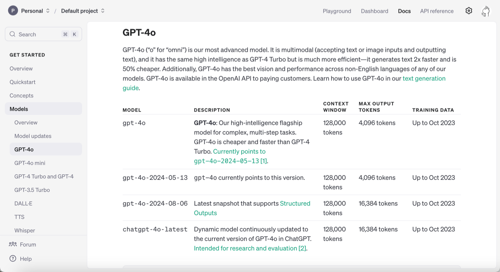
Figure 9: 標題
在使用 GPT 模型時，了解 “context window” 與 “max output tokens” 之間的差異對於有效地使用模型非常重要。以下是兩者的定義及其對使用者的影響：
Context Window(上下文窗口
- 定義: “Context window” 指的是模型在一次處理中能夠接收的最大 token 數量，包含了輸入的文本(prompt)和生成的回應(output)。這個窗口的大小決定了模型可以同時考慮多少信息來生成回應。
- GPT-4 的 context window: 例如，GPT-4 可能有 8,000 或 32,000 個 token 的上下文窗口，具體取決於你使用的模型版本。
- 影響: 如果輸入的文本超過了模型的 context window，最早的部分可能會被截斷，導致模型在生成回應時無法參考那些被截斷的部分。因此，如果你的輸入非常長，需要注意可能會丟失一些關鍵信息。
Max Output Tokens(最大輸出 tokens)
- 定義: “Max output tokens” 指的是模型在生成回應時最多可以生成的 token 數量。這個參數通常可以在 API 調用時進行設定，限制模型的回應長度。
- 影響: 設定 max output tokens 會影響回應的長度。如果你將這個值設置得太低，回應可能會被截斷；如果設置得太高，回應可能會變得冗長且不必要。一般來說，為了確保回應完整，應合理設定這個參數。
兩者的關係
- 上下文窗口(context window)= 輸入 tokens + 輸出 tokens: 這意味著你的 prompt 和模型的回應總共不能超過上下文窗口的大小。
- 例如: 如果你使用的是 8,000 個 token 的 context window，並且你輸入了 7,500 個 token，模型最多只能生成 500 個 token 的回應。
- 例如: 如果你使用的是 8,000 個 token 的 context window，並且你輸入了 7,500 個 token，模型最多只能生成 500 個 token 的回應。
- 使用者的影響:
- 輸入過長: 如果你輸入的 prompt 太長，超過了上下文窗口，模型將無法使用整個 prompt 來生成回應，這可能會導致回應的質量下降。
- 輸出過短: 如果 max output tokens 設定得太低，模型的回應可能會不完整，特別是如果回應需要詳細解釋或包含多個步驟。
- 效率與成本: 增加上下文窗口或輸出 tokens 數量可能會增加 API 調用的成本和時間。這意味著你需要在完整性和效率之間做出平衡。
- 輸入過長: 如果你輸入的 prompt 太長，超過了上下文窗口，模型將無法使用整個 prompt 來生成回應，這可能會導致回應的質量下降。
總結
- Context window 確定了模型能夠同時處理多少信息，包含輸入和輸出的總 token 數量。
- Max output tokens 確定了模型生成的回應能有多長。
- 使用者應根據需求調整輸入長度和最大輸出 token 數量，以確保模型生成完整且有意義的回應，同時保持效率。
2.4.4. 通用型AI使用小技巧
無法輸入太多字數時:
- 我先分段提供給你“XXXX@1”的內容，先記住即可
- 我先分段提供給你“XXXX@2”的內容，先記住即可
- 幫我用繁體中文與“報告書範本”架構，整理XXX@1~5的資料內容，撰寫XXX產品重點報告書，請逐段分析資料以完成撰寫:
報告書範本:###
- 產品市場性分析:
- 產品消費者面貌分析:
- 產品特色分析
- 如何撰寫產品介紹文案建議
- 產品市場性分析:
2.5. AI融入教學注意事項、風險與對策
- 把AI能做的丟給AI吧: 標準化評量、出題、英文寫作訂正、英文口說、程式設計、
- 教師花心力去培養人類的能力: (Bloom教育目標分類的頂層)有效提問策略、學習遷移、主動建構知識的策略
- 您的工作中哪些部分花費的時間最多？
- 你希望自己在哪些方面更有效率？
- 您認為哪些必要任務可以自動化？
- 如果你有時間，你會在課堂上花更多時間做哪一件事？
2.5.1. 師生使用生成式AI的注意事項
學生學習注意事項
- 學習辨別與負責：生成式 AI 會產生偏見、歧視、邏輯或不正確資料等問題，學生不應 該只依賴生成式 AI 的成果，而要學習識別、判斷，並且抱持批判態度，避免依賴 生成式 AI 產生內容而失去自我思考及檢查的機會。
- 將生成式 AI 當作學習夥伴：透過生成式 AI 互動過程中，獲得不同角度的啟發及更 豐富的答案。
- 注重清晰度：在與生成式 AI 互動過程中，應使用清晰且重的語氣，以培養良好的對話 與溝通習慣。
- 善用提示詞：生成式 AI 產生的內容需清楚表達需求，同樣的提示 (Prompt) 可能產生不 同的答案，因此更要學習如何撰寫具體的需求，一步步提高與增強問題與提問的 準確度。
- 思維擴展：善用生成式 AI 產生的回答，如果生成的答案或方向不如預期，要保持開放 思維，繼續探索新知。
- 保護隱私：避免在對話中提供任何個人資訊，僅對生成式 AI 分享非關機密的學習數 據及需求。
教師教學注意事項
- 教師教學專業優先：使用前須以學科及教學的專業知識來評估生成式 AI 產生的資料， 加以辨識與應用，使之強輔教師教學與學生學習目標的需要。
- 增加學習任務設計的策略：學習任務的設計要讓學生無法直接由生成式 AI 得到答案， 讓其與學生的思考緊密結合。
- 採用的內容真實：使用生成式 AI 搜尋的數據或資料，生成內容的正確性有時會有所 眼疑，可可能存在省略、偏見或錯誤的內容。在採用生成式 AI 提供的資訊時，教 師需再加以審查與驗證。
- 建立使用共識與規範：對家長與學生而言，使用生成式 AI 是新工具與新思維的學習， 為能促進教師生學習經驗共享與同步，教師可應用本指引與學生及家長進行溝通， 共同建立使用生成式 AI 的共識規範，例如使用生成式 AI 寫的原則及界限等，特別 是學生的作業、作品或報告如有使用生成式 AI 助助，教師應要求學生說明該作品使 用的 AI 名稱、版本與版本日期，並提供使用與製作過程中的作為佐證，以對生成內容 進行評估。
- 保護學校及個人隱私：避免在使用生成式 AI 過程中，提到學校保密的內容及個資。
2.5.2. 禁止? 鼓勵? 輔導?
個人做法: 開放
- 不符合現實生活: 日常我們在開發系統一定是GOOGLE+AI
- 學生平時可以問同學，有的學生不喜和同儕互動
- 由評量來決定主要的分數(斷網+onlinePDF教材)
2.5.3. 從生命週期看AI發展
若說 2023 年是生成式 AI 的爆發年，2024 即是生成式 AI 的穩定發展年，到了這個階段 AI 融入教學的重點不再是「『認識』生成式 AI 延伸有哪些功能、工具」，而是「『理解』生成式 AI 在教學生態系中能扮演什麼樣的角色」，才能進一步推展到「『應用』生成式 AI 在個別變數的課堂情境」的思維。3
10年一次創新科技
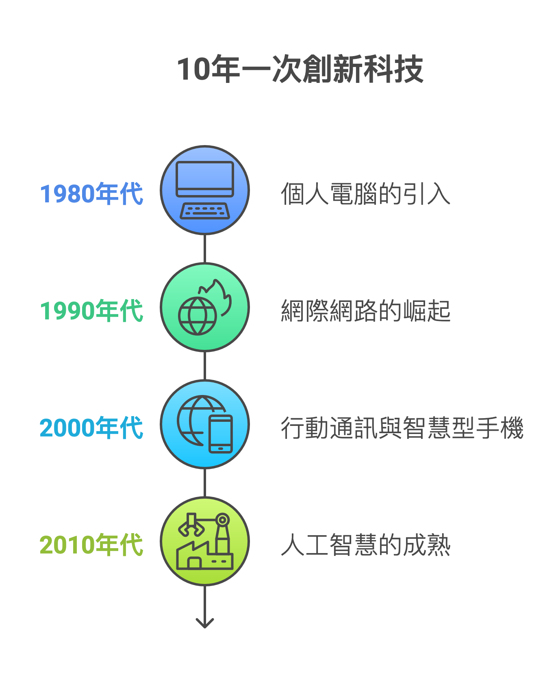
Figure 10: 每十年一次的科技創新
綜觀近半個世紀的資訊科技發展，幾乎每隔十年就有一種能深刻改變人類生活的革命性科技問世。
- 1980年代開始普及的電腦將計算、資料處理與自動化引入日常生活，提高了人類的工作效率；
- 1990年代崛起的網際網路打破了時空限制，讓全球資訊得以即時傳遞，徹底改變人類的溝通方式與資訊獲取模式。
- 2000年開始普及的行動通訊與智慧型手機使人們隨時隨地都能連接到數位世界，實現天涯若比隣的想像。
- 到了2010年，步入成熟期的人工智慧(AI)技術更是掀起了新一波科技革命，自此機器具備了學習、推理和決策的能力，並在醫療、交通、金融等各領域帶來顛覆性的應用。這些變革性的科技不僅改變了人類的生活方式，也持續引領著社會進步。
從AI到生成式AI的快速跳躍
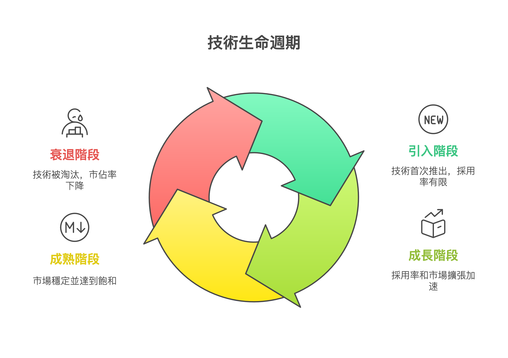
Figure 11: 技術生命週期
技術生命週期(Technology Life Cycle, TLC)是指一項技術從最初開發到最終被淘汰的過程，可以分為如下四個階段 ：
- 引入階段(Introduction Stage)：技術生命週期的早期階段，技術剛剛推出市場，採用率有限，成本高昂且存在不確定性。
- 成長階段(Growth Stage)：技術採用速度加快，市場快速擴展。
- 成熟階段(Maturity Stage)：市場穩定並達到飽和。
- 衰退階段(Decline Stage)：技術逐漸被其他新技術淘汰，市佔率下降。
反觀生成式AI技術，第一篇GPT論文 發佈時間為2018年、第一篇DALL-E相關論文 於2021年發佈，之後這兩項改變人類使用電腦習慣的革命性技術旋即於2022年正式上線，接下來生成式AI就成為全民運動。2023年甚至已被視為生成式AI元年。面對還來不及進入成熟階段就已被市場廣泛採用的新技術，身為用戶的我們在享受新技術帶來的便利的同時，也將被迫承受這項未成熟的技術所衍生的問題。

Figure 12: AI重要發展階段
早期的AI聊天機器人
ELIZA
1966 年，麻省理工學院的約瑟夫·韋森鮑姆(Joseph Weizenbaum)開發了一個有趣的程式： ELIZA (如圖 1.2 1)，該程式試圖扮演一個心理治療師的角色來與人類交談。覺得有點似曾相識嗎？是的，這就是遠古時代的聊天機器人、如今ChatGPT(Chat Generative Pre-trained Transformer)的鼻祖。
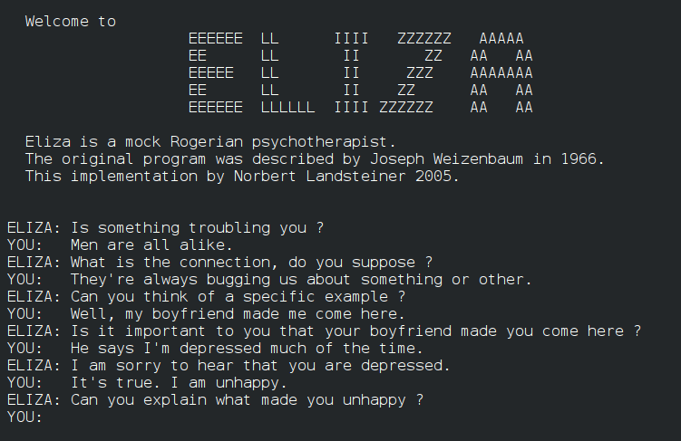
Figure 13: ELIZA
- 目前能做到什麼程度
個人化教學: Math problems with GPT-4o, 看到這段我感概萬千，我的小孩出生的太早了，自己的小孩最難教，最難得的是，當chatgpt發現你在說話時她會立刻停下來聽完你的問題，即便當時她正在說話。
生命週期變快的影響
- 法律來不及反應
- 教育領域來不及反應: 從禁止到輔導使用
- 學習速度跟不上科技的進化
AI
AI 發展生命週期：每十年一大突破
- 1966：ELIZA 誕生(早期自然語言處理嘗試)
- 貢獻：模擬心理諮詢對話，成為聊天機器人的濫觴。
- 代表概念：符號式 AI、簡單模式匹配。
- 貢獻：模擬心理諮詢對話，成為聊天機器人的濫觴。
- 1980s：專家系統盛行(Symbolic AI)
- 代表技術：MYCIN、XCON。
- 特徵：以「規則庫 + 推理機」為核心，模擬專家決策流程。
- 應用領域：醫療診斷、企業決策。
- 限制：缺乏學習能力、維護成本高。
- 代表技術：MYCIN、XCON。
- 1997：IBM Deep Blue 擊敗西洋棋王卡斯帕羅夫
- 意義：AI 首度在策略性複雜遊戲中超越人類頂尖棋手。
- 技術重點：搜尋演算法、評估函數、專用硬體。
- 意義：AI 首度在策略性複雜遊戲中超越人類頂尖棋手。
- 2006：深度學習(Deep Learning)重啟
- 由來：Geoffrey Hinton 提出「深度置信網路」(DBN)。
- 突破點：能從大量資料中自動學習抽象特徵。
- 後續影響：為圖像辨識、語音辨識、NLP 開啟新紀元。
- 由來：Geoffrey Hinton 提出「深度置信網路」(DBN)。
- 2012：ImageNet 大勝(AlexNet)
- 比賽事件：ImageNet 大規模圖像分類競賽。
- 成績：錯誤率大幅降低，證明深度卷積神經網路(CNN)效果卓越。
- 衝擊：引爆深度學習應用潮流，成為 AI 主流架構。
- 比賽事件：ImageNet 大規模圖像分類競賽。
- 2016：AlphaGo 擊敗李世乭(圍棋)
- 意義：首次在極高複雜度的圍棋中擊敗人類頂尖選手。
- 技術重點：深度強化學習(Deep Reinforcement Learning)、蒙地卡羅樹搜尋(MCTS)。
- 影響：證明 AI 能從「自我學習」中獲得超越人類的策略判斷力。
- 意義：首次在極高複雜度的圍棋中擊敗人類頂尖選手。
- 2018：BERT 模型發表(語言理解革命)
- 貢獻：Google 推出 BERT(Bidirectional Encoder Representations from Transformers)，可從雙向理解句意。
- 技術亮點：Transformer 架構、預訓練語言模型(PLM)。
- 影響：大幅提升問答系統、摘要、分類等語言任務的準確度，並成為 NLP 領域新標準。
- 貢獻：Google 推出 BERT(Bidirectional Encoder Representations from Transformers)，可從雙向理解句意。
- 2020：GPT-3 公布(通用語言生成突破)
- 開發者：OpenAI。
- 規模：1750 億參數，能生成高品質長篇文章。
- 創新點：僅需「少量提示」即可完成對話、寫作、翻譯、程式設計等任務。
- 社會效應：開始引發 AI 應用於知識工作、教育、創作的廣泛討論。
- 開發者：OpenAI。
- 2022：ChatGPT 爆紅(大眾化轉捩點)
- 關鍵事件：ChatGPT(基於 GPT-3.5)免費開放使用，數天內突破百萬用戶。
- 社會效應：大量使用者首次感受到生成式 AI 的實用性與自然互動。
- 教育與職場影響：從輔助學習、教案設計到客服與內容生成皆見其蹤影。
- 關鍵事件：ChatGPT(基於 GPT-3.5)免費開放使用，數天內突破百萬用戶。
- 2023：生成式 AI 爆發年
- 關鍵發展：
- GPT-4 上線，能力更穩定，支援多模態輸入。
- Stable Diffusion / Midjourney / DALL·E 2 等圖像生成模型蓬勃發展。
- AutoGPT / Agent 系統 開始探索多步任務執行。
- GPT-4 上線，能力更穩定，支援多模態輸入。
- 整體趨勢：生成式 AI 成為生產力工具(文字、圖像、影音)。
- 關鍵發展：
- 2024：生成式 AI 穩定發展年
- 特徵：
- 多家企業將生成式 AI 整合進產品線。
- 教育、法律、金融、媒體等領域出現廣泛應用與倫理審查。
- 國際間開始制定規範(如歐盟 AI Act、美國 AI 政策草案)。
- 多家企業將生成式 AI 整合進產品線。
- 應用趨勢：
- 從「新奇實驗」走向「實務整合」與「產業流程重構」。
- 使用者素養與道德思辨能力成為關鍵。
- 從「新奇實驗」走向「實務整合」與「產業流程重構」。
- 特徵：
2.5.4. 風險
幻覺(Hallucinations)
歧視和偏見(Discrimination and Bias)
- 生成式AI可能會在訓練數據中反映出存在的社會偏見，從而在生成內容中出現歧視性或偏見性的言論。
- 這對於教育環境特別有害，因為它可能會強化學生的不正確觀念或造成不公平的學習環境。
依賴性(Over-reliance)
- 學生可能過於依賴AI生成的答案，而忽視了獨立思考和問題解決的能力發展。這可能削弱他們的批判性思維和創造力。
隱私問題(Privacy Concerns)
- AI工具可能會收集和處理學生的個人數據，這可能帶來隱私和數據保護的風險，尤其是在數據被不當使用或泄露的情況下。
認知卸載(Cognitive Offloading)的風險
- 我們使用手機來儲存資訊、設置鬧鐘以及使用像Google Maps 導航，或者像倒車時使用360環警雷達等，從而減少這些任務所需的心智努力。而過度仰賴外部工具，可能導致我們在沒有這些工具的情況下提取資訊的能力下降，可能會影響我們將知識轉化到長期記憶。
- 換句話說，未來可能出現學生沒有GAI就不會學習、教師沒有GAI就不會教學的場景?但是我完全沒有這種擔心，不是對學生有信心，是對GAI不會消失有信
抄襲
以AI生成的內容繳交作業
2.5.5. Solution
solution to 幻覺
- 複查
- 針對同一問題請它重複生成，比較兩次的內容
- 以不同AI對同一問題生成結果進行比對
介紹不同AI工具的優劣

- 同時用多個GPT驗證資枓: 結局跌破眼鏡！ChatGPT vs Claude vs Gemini 付費版AI大PK
chathub
簡介台灣文學作品“浪淘沙”及其故事背景

- Google it
- 請教專家
- 針對同一問題請它重複生成，比較兩次的內容
質疑
- 引導學生質疑AI生成的結果，進而質疑Google搜尋的結果
活動1: 設計一個問題，刻意讓AI回答錯誤
活動2：(台大陳縕農老師)設計一個程式，讓AI生成的程式是無法執行，接下來由學生引導AI修正這支程式，進行生成可行的程式，由這個活動來讓學生理解即便AI能方便生成程式，但仍需要使用者的專業知識來引導、修正 - [來源忘了]在課堂中，我們已經講述過儒、墨、道、法，此四家的的基本學說，並請請各位同學思考此四家如何用其思想來解決社會與政治的動盪。接下來，請各位同學利用「ChatGPT」跟AI討論此問題：「請問先秦諸子：儒家、墨家、道家、法家，如何運用他們的思想來解決當時社會與政治的動盪？」(直接複製給AI即可)等AI回答後，請思考並回答以下問題：
- 我在講義上的回答與AI的回答有何差異？哪裡是我沒有注意到的？
- AI的回答中，此四家有何共通點？
- 針對AI的回答，根據你的學習與查找的資料，提出一點質疑。
- 我在講義上的回答與AI的回答有何差異？哪裡是我沒有注意到的？
- 找出老師課堂說錯、教材講義錯誤：加分
- 由AI生成的資料是否需要引用來源取決於使用的情境和要求。如果您在正式的學術或專業文獻中使用AI生成的資料，通常需要說明這些資料的來源，即便它是由AI生成的。這可以包括引用AI模型或工具的名稱，以及使用的特定提示(prompt)或參數。例如，如果使用了ChatGPT生成某些內容，可以在文中注明「本內容由ChatGPT生成，基於特定提示」，並在參考文獻中列出工具的相關信息。如果您需要更詳細的指導，可以根據所在機構或出版物的要求來決定如何處理引用。
GAI內容檢查
- 工具
- GPTZero
- 簡介：GPTZero 是一個專門用來檢測GPT模型生成文本的工具。它通過分析文本的困難度和複雜度來判斷其是否可能由AI生成。
- 特點：該工具會分析文本的流暢性、複雜性和不規則性，並給出一個“可疑度”的評分。
- 簡介：GPTZero 是一個專門用來檢測GPT模型生成文本的工具。它通過分析文本的困難度和複雜度來判斷其是否可能由AI生成。
- Turnitin AI Detection
- 簡介：Turnitin 是一個學術誠信檢查工具，它最近增加了對AI生成文本的檢測功能，特別是在學術環境中使用廣泛。
- 特點：它不僅能檢測抄襲，還能檢測文本是否有可能是由AI生成的，並且會提供詳細的報告。
- 簡介：Turnitin 是一個學術誠信檢查工具，它最近增加了對AI生成文本的檢測功能，特別是在學術環境中使用廣泛。
- Writer.com AI Content Detector
- 簡介：Writer.com 提供一個可以檢測AI生成文本的工具，適用於檢查文章、報告或其他類型的文本。
- 特點：該工具會提供一個AI生成文本的可能性評分，並標記可疑的部分。
- 簡介：Writer.com 提供一個可以檢測AI生成文本的工具，適用於檢查文章、報告或其他類型的文本。
- Crossplag AI Content Detector
- 簡介：這是一個新興的AI檢測工具，專注於檢測文本是否由AI生成或修改。
- 特點：該工具提供了詳細的報告和簡單的界面，適合不同背景的用戶使用。
- 簡介：這是一個新興的AI檢測工具，專注於檢測文本是否由AI生成或修改。
- Hugging Face’s Transformers-based Classifier
- 簡介：Hugging Face提供了一些開源工具，可以用來訓練模型檢測生成式AI文本。你可以基於這些模型開發自訂的檢測工具。
- 特點：這種方法靈活性高，但需要一定的技術知識來設置和運行。
- 簡介：Hugging Face提供了一些開源工具，可以用來訓練模型檢測生成式AI文本。你可以基於這些模型開發自訂的檢測工具。
- Winston.AI
- 文字偵測(https://gowinston.ai)
- 文字偵測(https://gowinston.ai)
- AI or Not
- 圖片及聲音(https://www.aiornot.com)
- 圖片及聲音(https://www.aiornot.com)
- GPTZero
- 關於道魔之爭
- GPTZero
- 簡介：GPTZero 是一個專門用來檢測GPT模型生成文本的工具。它通過分析文本的困難度和複雜度來判斷其是否可能由AI生成。
- 特點：該工具會分析文本的流暢性、複雜性和不規則性，並給出一個“可疑度”的評分。
AI生成的內容
我是一位高中資訊科師，請幫我生成一份演講講稿，主題是“AI融入教學設計”，對象是高中各領域教師，演講時間一小時。
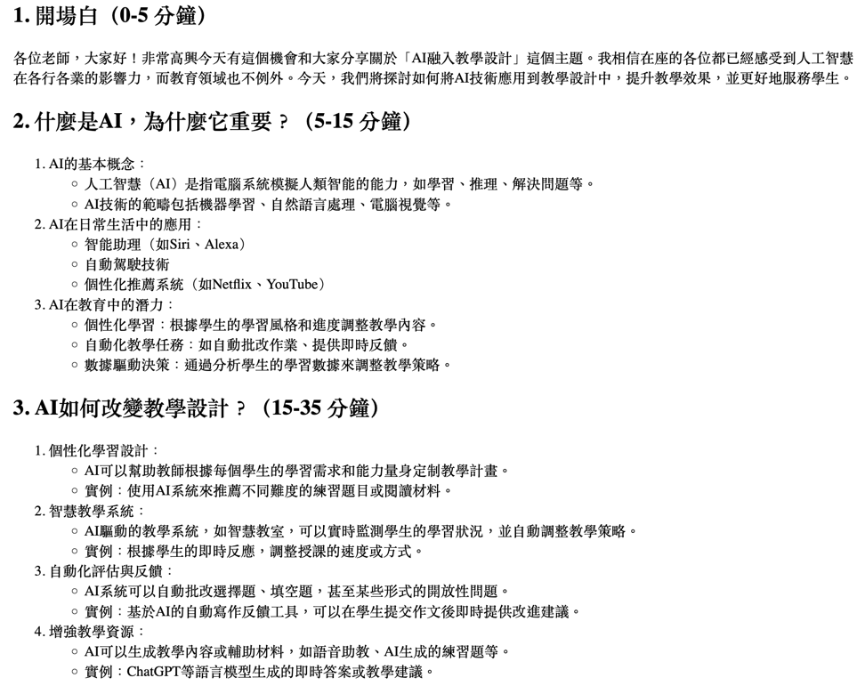

自己的教材
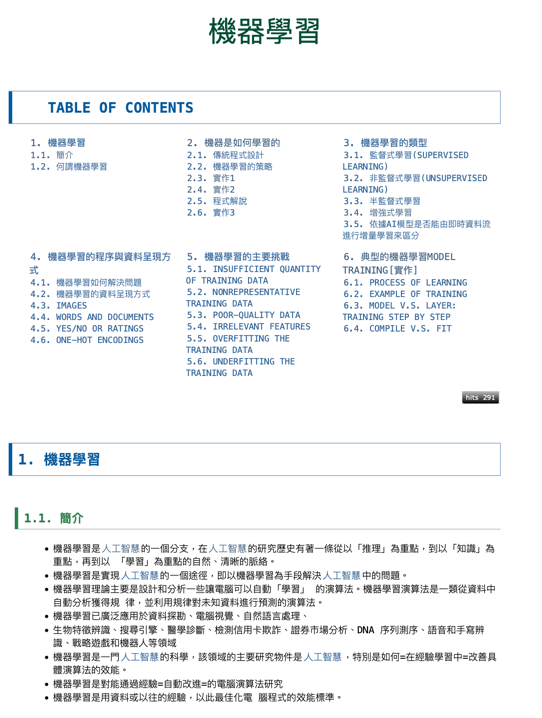
2 #+ATTR_HTML: :width 500
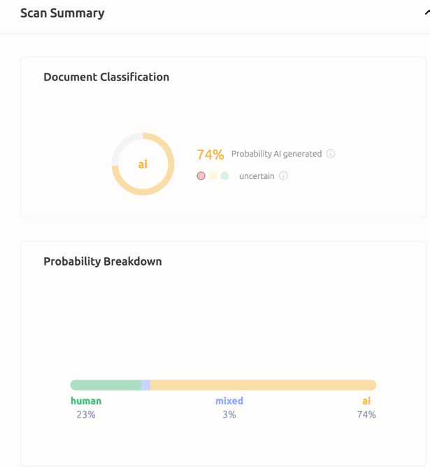
GAI出現之前的PAPER
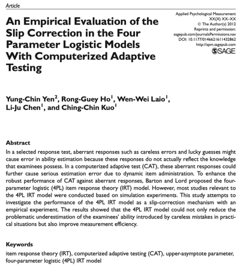

- 簡介：GPTZero 是一個專門用來檢測GPT模型生成文本的工具。它通過分析文本的困難度和複雜度來判斷其是否可能由AI生成。
- HIX.AI:
- GPTZero Plus?
- GPTZero
2.5.6. 結論
Richard E. Clark(南加大教育學院) v.s. Robert Kozma(密西根大學教育學院)
針對 教學媒體v.s教學本身 ，clark與kozma曾經有過如下精彩的互動:
- 1983年Clark宣稱媒體只是載具(vehicles)，就如購物中心運送食品的推車，我們不會因為使用載具不同就會增加食品的養份，換言之，在任何情形下媒體均對學習沒有任何助益，如果有，那是基於教師使用不同教學設計所致。
- 1991年Robert Kozma(時職於美國密西根大學教育學院)以「媒體伴學」(Learning with Media)一文向Clark做出回應，Kozma認為媒體是設計科學，不是自然科學，若是媒體無益學習，那是因為人們尚未研發出有助學習的媒體，而不是媒體無益學習。
- 1994年Clark再度以「媒體未曾影響學習」(Media will Never Influence Learning)為文回應Kozma的主張，認為「新理論」發展之前無需投注於新媒體影響學習的研究上浪費時間心力，科技特性論無法取代教學內容及教學方法而成為獨特個體認知代理的必要條件，科技選擇無關學習者信念或動機，但攸關教育經濟、認知經濟。
- 同(1994)年Kozma回應以「媒體對學習的影響─持續論證」(The Influence of Media on Learning: The Debate Continues)呼籲不可忽視媒體重塑表徵符號系統及資訊處理系統，否則，科技單純只為教育娛樂的思維將導致學習微乎其微。Kozma認為理論使用與研究設計缺乏衡量學習發生的認知、情意、社會等歷程，導致科技淪為載具。新理論、新方法、新評估適配新科技才是未來研究趨勢。
2.6. Vibe Coder
Vibe Coder是一個專為教育工作者設計的AI工具，旨在幫助教師更有效地整合AI技術到課堂教學中。它提供了多種功能，包括課程設計、教學資源生成和學生互動等，旨在提升教學效率和學生學習體驗。
3. AI原理(下午)
我們不能完全確定其他人是否真的在思考,我們只能通過他們的行為來判斷。
… the only way by which one could be sure that a machine thinks is to be the machine and to feel oneself thinking. … Likewise according to this view the only way to know that a man thinks is to be that
particular man.
by A. M. Turing
Footnotes:
TALIS 2018 Results, TALIS 2018 Results (Volume II), Teachers and School Leaders as Valued Professionals